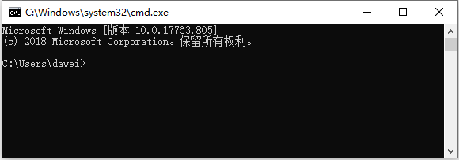
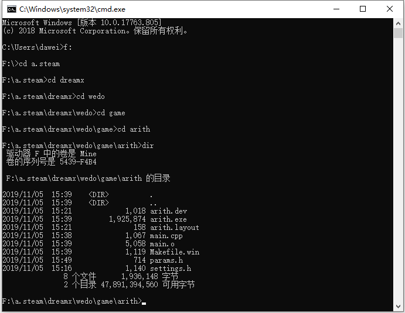

很多时候希望在程序启动时输入变化参数，我们把用这种方式输入的参数叫做命令行参数。
在项目arith中创建新文件
在文件中输入如下内容
void help(){
}
bool params(int args, char * argv[],int &num,char &disp){
return true;
}
按Ctrl+s存盘，选择“保存类型”为“*.h”，文件名为params.h

在main.cpp中引入如下语句

考虑到在不同场合都可能出现提示软件使用方法的帮助信息，把显示help信息打包成一个独立的函数。
void help(){
printf("Usage: game.exe [--help]|[--disp h|v]|[--numb 20]\n\n");
printf("--help :display help\n");
printf("--disp :show model of question. You can select h(horizontal) or v(vertical)\n");
printf("--numb :question number\n\n");
return ;
}
在params函数中以--help参数或出错的形式显示帮助信息
bool params(int args, char * argv[],int &num,char &disp){
if(args>1){ //如果命令行有参数输入
for(int i=1;i<args;i++){ //分析每个参数
if(strcmp(argv[i],"--help")==0){ //如果参数是--help
help(); //显示帮助信息
return false; //结束游戏程序
}else { //有命令行参数输入，但不是我们要的
help(); //显示帮助信息
return false; //结束游戏程序
}
}
}
return true;
}
回到main.cpp获得焦点，按F12重新构造全部。
按Ctrl+r并输入cmd命令，出现运行窗口
点击确定，出现命令终端

通过DOS命令（根据自己的具体情况），进入代码空间

测试命令行参数的执行情况：
输入正确参数的情况
F:\a.steam\dreamx\wedo\game\arith>arith --help
Usage: game.exe [--help]|[--disp h|v]|[--numb 20]
--help :display help
--disp :show model of question. You can select h(horizontal) or v(vertical)
--numb :question number
输入错误参数的情况
F:\a.steam\dreamx\wedo\game\arith>arith 3
Usage: game.exe [--help]|[--disp h|v]|[--numb 20]
--help :display help
--disp :show model of question. You can select h(horizontal) or v(vertical)
--numb :question number
在params函数中增加对--disp的判断和处理

回到main.cpp获得焦点，按F12重新构造全部。
回到命令终端，测试--disp正确和错误情况
F:\a.steam\dreamx\wedo\game\arith>arith --disp v
Please select level([1]-18):
Please select operator([+],-):
Please select Hard([1]-60):
level=1,opt=+,hard=1
... ...
--disp后没有参数情况
F:\a.steam\dreamx\wedo\game\arith>arith --disp
Usage: game.exe [--help]|[--disp h|v]|[--numb 20]
--help :display help
--disp :show model of question. You can select h(horizontal) or v(vertical)
--numb :question number
--disp后输入错误参数情况
F:\a.steam\dreamx\wedo\game\arith>arith --disp 3
Usage: game.exe [--help]|[--disp h|v]|[--numb 20]
--help :display help
--disp :show model of question. You can select h(horizontal) or v(vertical)
--numb :question number
在params函数中增加对--numb的判断和处理

回到main.cpp获得焦点，按F12重新构造全部。
回到命令终端，测试--numb正确和错误情况
F:\a.steam\dreamx\wedo\game\arith>arith --numb 5
Please select level([1]-18):
Please select operator([+],-):
Please select Hard([1]-60):
level=1,opt=+,hard=1
... ...
--disp后没有参数情况
F:\a.steam\dreamx\wedo\game\arith>arith --numb
Usage: game.exe [--help]|[--disp h|v]|[--numb 20]
--help :display help
--disp :show model of question. You can select h(horizontal) or v(vertical)
--numb :question number
--disp后输入错误参数情况
F:\a.steam\dreamx\wedo\game\arith>arith --numb d
Usage: game.exe [--help]|[--disp h|v]|[--numb 20]
--help :display help
--disp :show model of question. You can select h(horizontal) or v(vertical)
--numb :question number
修改main.cpp
在main.cpp获得焦点，按F12重新构造全部。
回到命令终端，测试全部参数的正确性
F:\a.steam\dreamx\wedo\game\arith>arith --numb 5 --disp v
Please select level([1]-18):
Please select operator([+],-):
Please select Hard([1]-60):
level=1,opt=+,hard=1,disp=v,numb=5